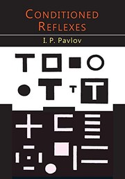

Conditioned Reflexes: An Investigation of the Physiological Activity of the Cerebral Cortex
Book·Ivan Pavlov, 1927·条件反射

Pavlov's original work summarizing his research on conditioned reflexes.
- Author
- Ivan Pavlov
- Year
- 1927
- Difficulty
- Intermediate
- Kind
- Primary text
- Schools
- Classical Conditioning
- Core theories
- Conditioned Reflex: Acquisition, Extinction, Generalization
Editions
- Chinese edition 《条件反射》 巴甫洛夫 · tr. 周先庚 / 荆其诚 / 李美格 · 北京大学出版社 · 2010 Douban 9.1 (59 ratings) Douban page ↗
- English edition Conditioned Reflexes: An Investigation of the Physiological Activity of the Cerebral Cortex Ivan P. Pavlov (trans. G. V. Anrep) · Dover reprint of the 1927 Oxford University Press edition · 1960 Open Library ↗